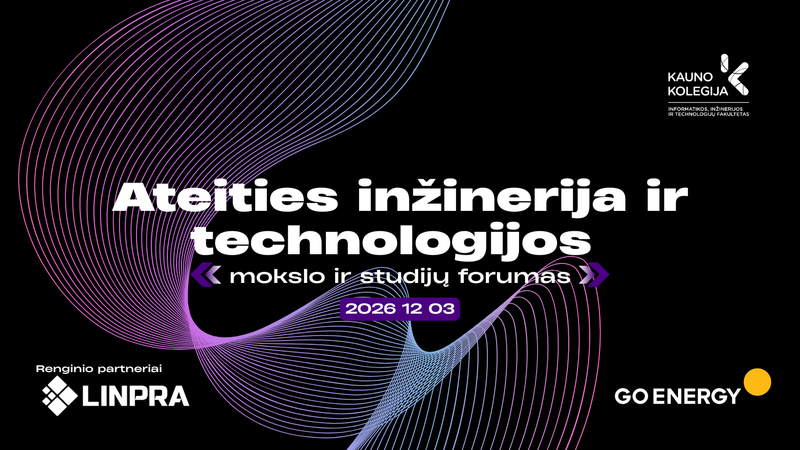
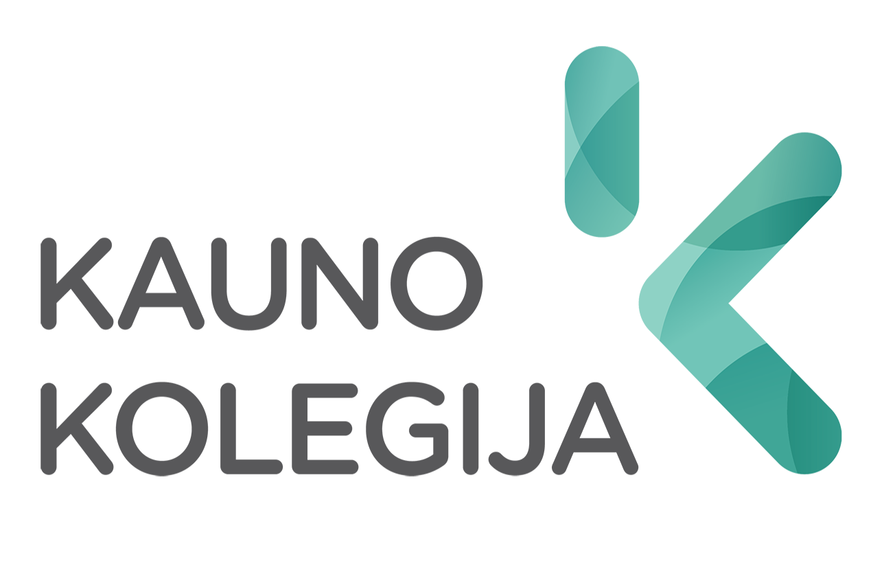

Dalyvių registracija
Susitikime prie kavos puodelio.
01
KAIP ŠIANDIEN KURIAMOS TECHNOLOGIJOS, KURIOS PAKEIS RYTOJŲ? KUR SUSITINKA MOKSLAS, VERSLAS IR STUDIJOS? IR KOKIŲ SPRENDIMŲ INŽINERIJAI REIKĖS JAU ARTIMIAUSIOJE ATEITYJE?
TAI RENGINYS TIEMS, KURIE NE TIK STEBI TECHNOLOGIJŲ KAITĄ, BET IR PATYS NORI BŪTI JOS DALIMI. FORUMAS SUBURS VERSLO, MOKSLO, STUDIJŲ IR STUDENTŲ BENDRUOMENES, KAD SKIRTINGOS PATIRTYS, KOMPETENCIJOS IR IDĖJOS SUSITIKTŲ VIENOJE ERDVĖJE IR VIRSTŲ NAUJOMIS BENDRADARBIAVIMO GALIMYBĖMIS.
VERSLO ATSTOVAI GALĖS IŠ ARČIAU SUSIPAŽINTI SU INŽINERINIO STUDIJŲ CENTRO VYKDOMOMIS MOKSLINIŲ TYRIMŲ IR EKSPERIMENTINĖS PLĖTROS (MTEP), PROJEKTINĖMIS VEIKLOMIS BEI GALIMYBĖMIS KARTU ĮGYVENDINTI NAUJAS INICIATYVAS.
TYRĖJAI IR DĖSTYTOJAI TURĖS GALIMYBĘ ATRASTI NAUJŲ MTEP BEI PROJEKTINIO BENDRADARBIAVIMO KRYPČIŲ, UŽMEGZTI RYŠIUS SU POTENCIALIAIS PARTNERIAIS IR PASIDALYTI SAVO PATIRTIMI.
ATEITIES INŽINERIJA IR
TECHNOLOGIJOS 2026
Dalyvių sąrašas bus paskelbtas netrukus. Žemiau — pavyzdiniai profiliai ir nuotraukos.
Preliminarus programos maketas. Galutiniai laikai ir pranešėjai bus patikslinti.
Susitikime prie kavos puodelio.
01Forumo atidarymas ir organizatorių sveikinimas.
02Mokslo ir verslo pranešimai. Idėjos, patirtys ir ateities perspektyvos.
03Laikas pokalbiams ir naujoms pažintims.
Žalioji energetika, geodezija, automatika ir robotika, pramoninio dizaino inžinerija.
04Praktinės sesijos, bendros idėjos ir naujos bendradarbiavimo kryptys.
05
Geriausios idėjos prasideda nuo pokalbio.
Kurkime inžinerijos ateitį kartu.
Galerijos maketas — iliustracinės nuotraukos. Jos bus pakeistos renginio akimirkomis.